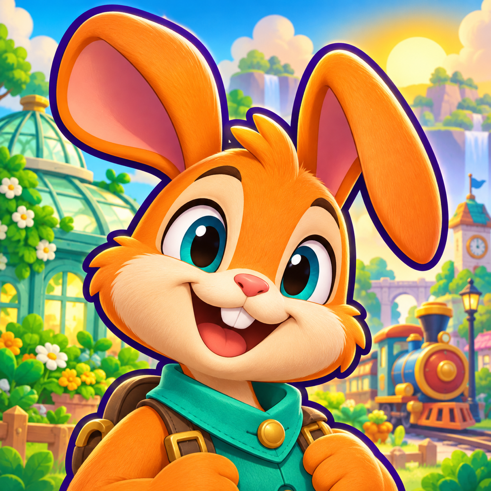

Player support
Welcome to Skybreak Town: create a character, explore colorful neighborhoods, fish, decorate your home and adventure through three story chapters.
Contact support
Email lptgators@gmail.com for help. Include your device model, game version, what happened, and the steps that led to it. Screenshots are optional. Please do not send passwords or sensitive personal information.
Playing with nearby friends
Private co-op supports 2–4 players on the same Wi-Fi network. Install the same game version on each device, enable Local Network permission in iOS or iPadOS Settings, then create a room and share its room code with your friends. This release does not provide internet matchmaking or public districts.
Characters and saves
Progress is stored on your device. Use the in-game character-transfer feature to move a character between your own nearby devices. Do not uninstall the game as a troubleshooting step before protecting your saves; removing the app may remove its data.
Performance and controls
Open Settings in the main menu or pause menu. Choose Balanced or Low graphics and 30 FPS to reduce the rendering workload. You can adjust sound, camera sensitivity and touch controls. The running button toggles running on and off.
Privacy
Read our privacy policy for information about local saves, nearby co-op, approved character transfers and support requests.